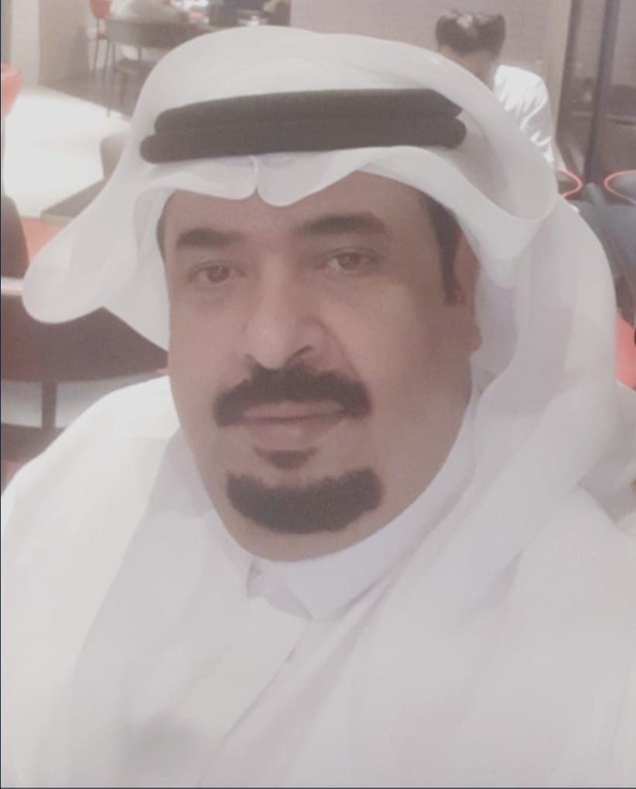

أ. جميل بن محمد جميل بياري
خبرة مهنية في قطاع الحج والخدمات والإدارة والاستثمار — قرابة 30 عاماً
خبير متمرس في قطاع الحج على مدى ثلاثين عاماً، بدأ من مراكز الخدمة الميدانية وصولاً إلى عضوية مجلس إدارة مؤسسة مطوفي حجاج الدول العربية والإشراف على إدارات التطوير والاستثمار واستقبال الحجاج، إلى جانب خبرة استثمارية وتجارية في قطاعات أخرى.
أبرز المحطات
- عضو مجلس إدارة والمشرف العام على إدارة التطوير والاستثمار ووحدة حجاج عبر الخليج وإدارة الاستقبال بمؤسسة مطوفي حجاج الدول العربية (بقرار وزاري رقم 68126 وتاريخ 21/4/1436هـ)، للدورة الانتخابية 1436–1439هـ، مع الإشراف على المسار الإلكتروني لنحو 39,000 حاج من حجاج المجاملة (موسم 1439هـ)
- الإشراف على استقبال وإسكان نحو 40,000 حاج من المجاملة والفرادى — الأكبر على مستوى مقدمي خدمة حجاج الخارج
- رئيس مركز خدمة ميدانية (1428–1447هـ)؛ ومدير فرع بشركة رحلات ومنافع أشرف على 10,000 حاج من باكستان
- خدمة حجاج مصر لأكثر من 15 عاماً، وليبيا 8 أعوام، وعمان والكويت 4 أعوام لكل منهما، إضافة إلى حجاج لبنان والعراق وباكستان وإندونيسيا والمغرب
- متابعة وتحصيل مبالغ متعثرة لدى مستثمر تجاوزت 21 مليون ريال وكسب القضية لصالح المؤسسة؛ ودراسة مشاريع إنشاء شركة لنقل الحجاج وشركة للعمرة
- شريك ومؤسس ومدير أول (65%) بشركة سمسمة للخبز؛ ومالك ومدير مؤسسة درة الجوار للمقاولات وأعمال التكييف
- دبلوم ثانوي تجاري؛ 23 عاماً في الشركة السعودية للكهرباء (حتى 2017)
مكة المكرمة
جوال: 0565131417
بريد: 1443oman@gmail.com